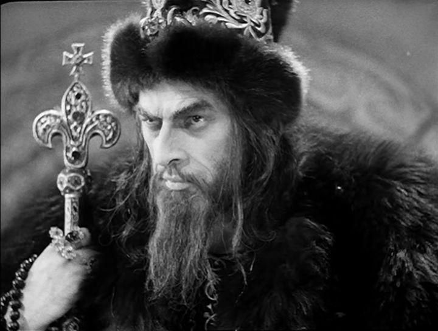
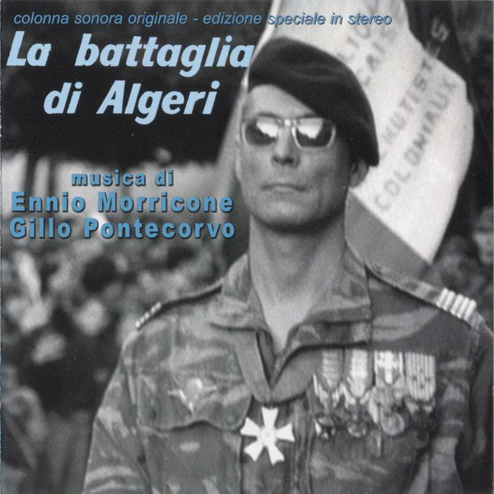

О "репрессиях" Ивана Грозного
15 сентября, 11:35

Клим Жуков живо и доходчиво рассказывают об "ужасающих" репрессиях времен Ивана Грозного.
https://youtu.be/-BASfn62GIw
Уже давно отмечено, что по части ненависти у отечественных либералов Иван Грозный уверенно соседствует с Петром Великим и Сталиным, тем более что в советское время, именно эти два царя оценивались наиболее комплиментарно при всей известной критике насчет феодализма и монархии. Хотя если смотреть объективно, с точки зрения "кровавости", на фоне своих европейских коллег по монархической деятельности, Иван Грозный был практически вегетарианцем.
PS. И еще на тему "исторических репрессий" и рефлексии по их поводу. Один из читателей порекомендовал посмотреть старый и практически забытый фильм "Битва за Алжир" 1966 года про геноцид учиненный французами в своей бывшей колонии.

Аннотация:
Кровавая драма, которая разыгралась в конце пятидесятых годов в Африке, легла в основу этой кинокартины. Взаимное неприятие французов и алжирцев чувствуется на протяжении всего кинофильма. А в центре – события битвы алжирцев за суверенность, в период между 1954 и 1960 годами. А главную роль здесь сыграл Саади Ясефа, он был одним из алжирских лидеров, поэтому и играл самого себя. Сценарий также основан на его мемуарах. Режиссер справедливо показал события с двух сторон, что говорит о том, что на войне нет плохих и хороших. Каждый совершает плохие поступки. Французы не гнушались пытками, а алжирцы взрывают продуктовые магазины. Чем закончится эта кровавая война? Рекомендуется любителям исторических и документальных картин.
http://tfilm.club/19231-bitva-za-alzhir.html - смотреть фильм (перевод конечно так себе, но на впечатление от фильма это не сильно влияет)
" В 1967 г. вышел сильный полудокументальный французский фильм "Битва за Алжир" - о войне в Алжире (1954-1962 гг.). В отличие от депортации чеченцев полвека назад, все исполнители которой давно умерли или на пенсии, алжирскую войну вели как раз действующие в 1967 г. политики (так, Миттеран был прокурором Алжира и толпами отправлял алжирцев на гильотину - этим кадром и начинается фильм). Армией французов командовали молодые еще военные, герои Сопротивления (только французская компартия была против войны в Алжире). Эти герои совершили геноцид - более 1 миллиона убитых алжирцев на 8 млн. населения. Но абсолютно никакого впечатления на французов этот фильм не произвел. Дело-то прошлое, уже пять лет прошло! Миттеран после этого два или три срока президентом выбирался, поучал Горбачева по поводу прав человека, и никто ему и слова упрека за старое не мог сказать, в голову бы не пришло."
(с) С.Г. Кара-Мурза.
Это к вопросу о исторической рефлексии, когда нам не то то, чтобы за Сталина пытаются комплекс вины навязать, а даже не самого плохого царя умершего в мохнатом году, пытаются ставить в вину.